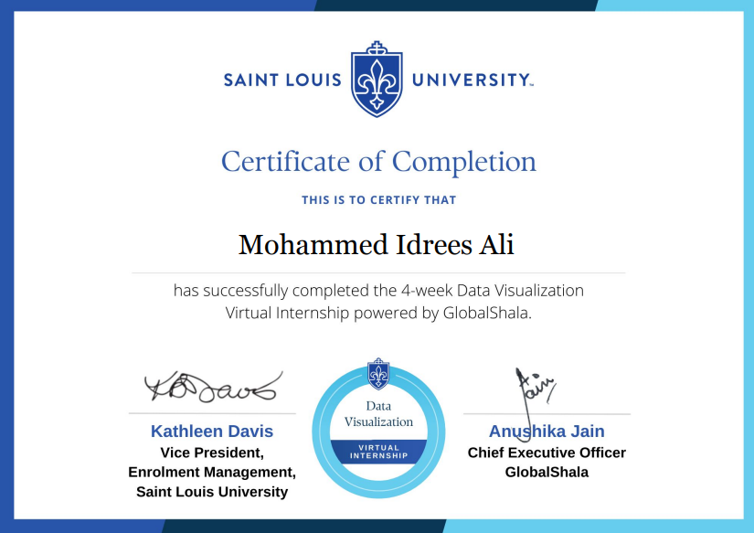

Internships

During my internship at Saint Louis University, I worked on transforming raw datasets into meaningful visual insights. I designed interactive dashboards and visual reports using tools like Excel and Power BI to support decision-making across departments. My responsibilities included data cleaning, trend analysis, and presenting complex information in a simple, visual format. I collaborated with faculty and research teams to tailor visualizations for academic and administrative use. This experience sharpened my skills in data storytelling, attention to detail, and turning numbers into narratives.